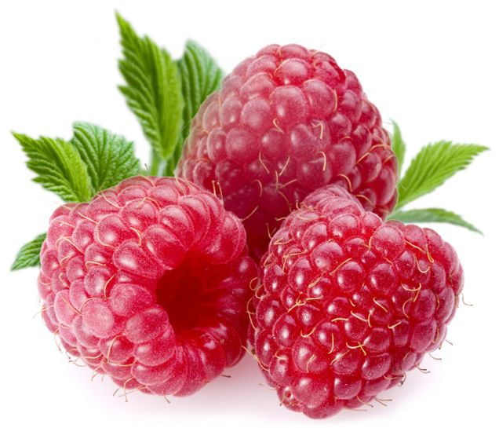

Raspberry

| Index |
|---|
| Short description |
| Nutritional value |
| Health benefits |
| Best time to eat |
| Who shoud avoid |
| Fun fact |
Short Description
Raspberry is a small, soft, red fruit with a sweet-tangy flavor. It is commonly eaten fresh and used in desserts, smoothies, and jams. Raspberries are highly nutritious and low in calories.
Nutritional Value
| Nutrient | Amount |
|---|---|
| Calories | 52 kcal |
| Carbohydrates | 12 g |
| Dietary Fiber | 6.5 g |
| Vitamin C | 43% |
| Manganese | High |
| Antioxidants | Very High |
Health Benefits
- Supports weight loss due to high fiber
- Improves digestion
- Good for heart health
- Controls blood sugar levels
- Improves skin health
Best Time to Eat
Raspberries are best eaten:
- In the morning
- As a mid-day snack
They are light and refreshing.
Avoid eating raspberries:
- Late at night if digestion is weak
Who Should Avoid
- People allergic to berries
- Those with kidney stones, due to oxalates
- People with sensitive stomach, if eaten in excess
Fun Fact
- Raspberries are not true berries botanically
- They belong to the rose family
- One raspberry contains over 100 tiny seeds